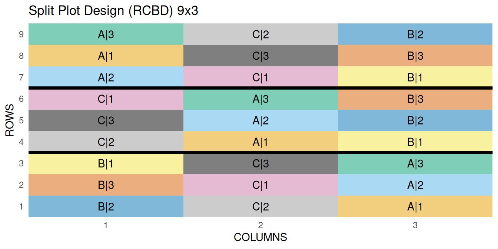
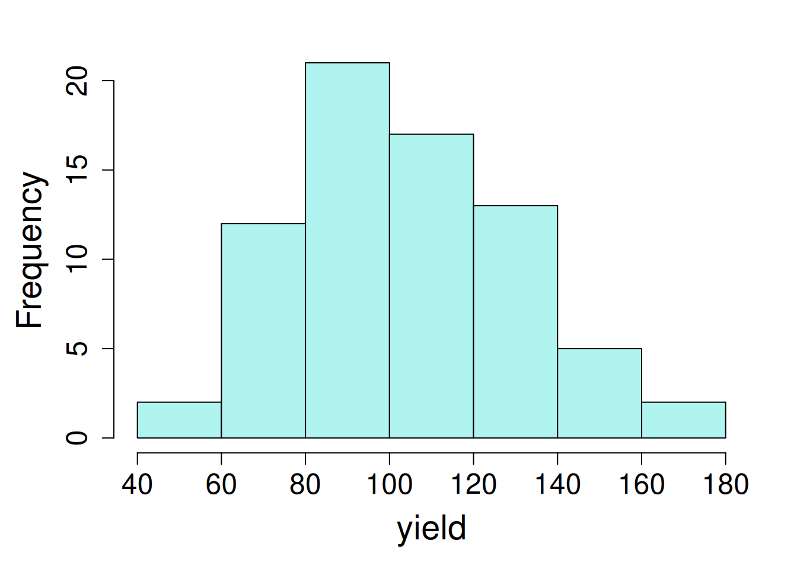
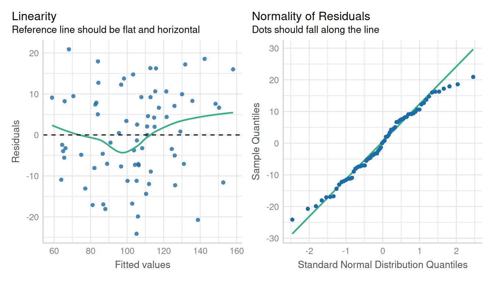

7 Split Plot Design
7.1 Background
Split plot designs are needed when we cannot randomly assign multiple levels of treatments in a completely randomized experiment. This often results in a generalization of the factorial design called a split-plot design. In split-plot design, the experimental units are called split-plots , and are nested within whole plots. The main principle is that there are whole plots, to which the levels of one or more factors of split-plots are assigned randomly.
7.2 Statistical Details
\[y_{ijk} = \mu + \alpha_i + \beta_j + (\alpha\beta)_{ij} + r_k + \epsilon_{ik} + \delta_{ijk}\]
Where:
\(\mu\) = overall experimental mean
\(\alpha\) = main effect of whole plot (fixed)
\(\beta\) = main effect of split plot (fixed) \(\alpha\beta\) = interaction between factors A and B \(r\) = block effect (random) \(\epsilon_{ij}\) = whole plot error \(\delta_{ijk}\) = split plot error
Both the overall error and the rep effects are assumed to be normally distributed with a mean of zero and standard deviations of \(\sigma\) and \(\sigma_{sp}\), respectively.
\[ \epsilon \sim N(0, \sigma)\]
\[\ \delta \sim N(0, \sigma_{sp})\]
7.3 Analysis Examples
Let’s start analyzing by loading required libraries.
library(lme4); library(lmerTest); library(emmeans)
library(dplyr); library(performance); library(ggplot2)
library(broom.mixed)library(nlme); library(performance); library(emmeans)
library(dplyr); library(ggplot2); library(broom.mixed)7.3.1 Example Model for RCBD Split Plot Designs
The oats data used in this example is from the MASS package. The design is RCBD split plot with 6 blocks, 3 levels for the main plots and 4 levels for the split plot. The primary outcome variable is yield.
| block | blocking unit |
| Variety (V) | Main plot with 3 levels |
| Nitrogen (N) | Split-plot with 4 levels |
| yield (Y) | yield (lbs per acre) |
The objective of this analysis is to study the impact of different varieties and nitrogen application rates on oat yields.
To fully examine the response of oat yield with different varieties and nutrient levels in a split plots, we will need to statistically analyse and compare the effects of varieties (main plot), nutrient levels (split plot), their interaction.
Let’s start this example analysis by first loading the ‘oat’ data from the MASS package.
data("oats", package = "MASS")
head(oats,5) B V N Y
1 I Victory 0.0cwt 111
2 I Victory 0.2cwt 130
3 I Victory 0.4cwt 157
4 I Victory 0.6cwt 174
5 I Golden.rain 0.0cwt 1177.3.1.1 Data integrity checks
- Check structure of the data
We will first examine the structure of the data. The “B”, “V”, and “N” needs to be a factor and “Y” should be numeric.
str(oats)'data.frame': 72 obs. of 4 variables:
$ B: Factor w/ 6 levels "I","II","III",..: 1 1 1 1 1 1 1 1 1 1 ...
$ V: Factor w/ 3 levels "Golden.rain",..: 3 3 3 3 1 1 1 1 2 2 ...
$ N: Factor w/ 4 levels "0.0cwt","0.2cwt",..: 1 2 3 4 1 2 3 4 1 2 ...
$ Y: int 111 130 157 174 117 114 161 141 105 140 ...- Inspect the independent variables
Next, run the table() command to verify the levels of the main plot and the split plot.
table(oats$V, oats$N)
0.0cwt 0.2cwt 0.4cwt 0.6cwt
Golden.rain 6 6 6 6
Marvellous 6 6 6 6
Victory 6 6 6 6- Check the extent of missing data
colSums(is.na(oats))B V N Y
0 0 0 0 - Inspect the dependent variable
Last, check the distribution of the dependent variable by plotting a histogram.

hist(oats$Y, main = NA, xlab = "yield")7.3.1.2 Model Building
We are evaluating the effect of V, N and their interaction on yield. The 1|B/V means that random intercepts vary with block and V nested within each block.
Recall the model:
\[y_{ijk} = \mu + \rho_j + \alpha_i + \beta_k + (\alpha_i\beta_k) + \epsilon_{ij} + \delta_{ijk}\] Where:
\(\mu\) = overall experimental mean, \(\rho\) = block effect (random), \(\alpha\) = main effect of whole plot (fixed), \(\beta\) = main effect of split plot (fixed), \(\alpha\)\(\beta\) = interaction between factors A and B, \(\epsilon_{ij}\) = whole plot error, \(\delta_{ijk}\) = split plot error.
oats_lmer <- lmer(Y ~ V + N + V:N + (1|B/V),
data = oats,
na.action = na.exclude)
tidy(oats_lmer)# A tibble: 15 × 8
effect group term estimate std.error statistic df p.value
<chr> <chr> <chr> <dbl> <dbl> <dbl> <dbl> <dbl>
1 fixed <NA> (Intercept) 80.0 9.11 8.78 16.1 1.55e-7
2 fixed <NA> VMarvellous 6.67 9.72 0.686 30.2 4.98e-1
3 fixed <NA> VVictory -8.50 9.72 -0.875 30.2 3.89e-1
4 fixed <NA> N0.2cwt 18.5 7.68 2.41 45.0 2.02e-2
5 fixed <NA> N0.4cwt 34.7 7.68 4.51 45.0 4.58e-5
6 fixed <NA> N0.6cwt 44.8 7.68 5.84 45.0 5.48e-7
7 fixed <NA> VMarvellous:N0… 3.33 10.9 0.307 45.0 7.60e-1
8 fixed <NA> VVictory:N0.2c… -0.333 10.9 -0.0307 45.0 9.76e-1
9 fixed <NA> VMarvellous:N0… -4.17 10.9 -0.383 45.0 7.03e-1
10 fixed <NA> VVictory:N0.4c… 4.67 10.9 0.430 45.0 6.70e-1
11 fixed <NA> VMarvellous:N0… -4.67 10.9 -0.430 45.0 6.70e-1
12 fixed <NA> VVictory:N0.6c… 2.17 10.9 0.199 45.0 8.43e-1
13 ran_pars V:B sd__(Intercept) 10.3 NA NA NA NA
14 ran_pars B sd__(Intercept) 14.6 NA NA NA NA
15 ran_pars Residual sd__Observation 13.3 NA NA NA NA oats_lme <- lme(Y ~ V + N + V:N ,
random = ~1|B/V,
data = oats,
na.action = na.exclude)
tidy(oats_lme)Warning in tidy.lme(oats_lme): ran_pars not yet implemented for multiple levels
of nesting# A tibble: 12 × 7
effect term estimate std.error df statistic p.value
<chr> <chr> <dbl> <dbl> <dbl> <dbl> <dbl>
1 fixed (Intercept) 80 9.11 45 8.78 2.56e-11
2 fixed VMarvellous 6.67 9.72 10 0.686 5.08e- 1
3 fixed VVictory -8.5 9.72 10 -0.875 4.02e- 1
4 fixed N0.2cwt 18.5 7.68 45 2.41 2.02e- 2
5 fixed N0.4cwt 34.7 7.68 45 4.51 4.58e- 5
6 fixed N0.6cwt 44.8 7.68 45 5.84 5.48e- 7
7 fixed VMarvellous:N0.2cwt 3.33 10.9 45 0.307 7.60e- 1
8 fixed VVictory:N0.2cwt -0.333 10.9 45 -0.0307 9.76e- 1
9 fixed VMarvellous:N0.4cwt -4.17 10.9 45 -0.383 7.03e- 1
10 fixed VVictory:N0.4cwt 4.67 10.9 45 0.430 6.70e- 1
11 fixed VMarvellous:N0.6cwt -4.67 10.9 45 -0.430 6.70e- 1
12 fixed VVictory:N0.6cwt 2.17 10.9 45 0.199 8.43e- 17.3.1.3 Check Model Assumptions
As shown in example 1, We need to verify the normality of residuals and homogeneous variance. Here we are using the check_model() function from the performance package.
check_model(oats_lmer, check = c('qq', 'linearity', 'reqq'), detrend=FALSE, alpha =0)check_model(oats_lme, check = c('qq', 'linearity'), detrend=FALSE, alpha=0)
Residuals from the model follows normal distribution and no evidence of Homoscedasticity.
7.3.1.4 Inference
Let’s have a look at the analysis of variance, for V, N and their interaction effect.
car::Anova(oats_lmer, type = "3", test.statistics = "Chisq")Analysis of Deviance Table (Type III Wald chisquare tests)
Response: Y
Chisq Df Pr(>Chisq)
(Intercept) 77.1664 1 < 2.2e-16 ***
V 2.4491 2 0.2939
N 39.0683 3 1.679e-08 ***
V:N 1.8169 6 0.9357
---
Signif. codes: 0 '***' 0.001 '**' 0.01 '*' 0.05 '.' 0.1 ' ' 1anova(oats_lme, type = "marginal") numDF denDF F-value p-value
(Intercept) 1 45 77.16732 <.0001
V 2 10 1.22454 0.3344
N 3 45 13.02273 <.0001
V:N 6 45 0.30282 0.9322Next, we can estimate marginal means for V, N, or their interaction (V*N) effect.
emm1 <- emmeans(oats_lmer, ~ V|N)
emm1N = 0.0cwt:
V emmean SE df lower.CL upper.CL
Golden.rain 80.0 9.11 16.1 60.7 99.3
Marvellous 86.7 9.11 16.1 67.4 106.0
Victory 71.5 9.11 16.1 52.2 90.8
N = 0.2cwt:
V emmean SE df lower.CL upper.CL
Golden.rain 98.5 9.11 16.1 79.2 117.8
Marvellous 108.5 9.11 16.1 89.2 127.8
Victory 89.7 9.11 16.1 70.4 109.0
N = 0.4cwt:
V emmean SE df lower.CL upper.CL
Golden.rain 114.7 9.11 16.1 95.4 134.0
Marvellous 117.2 9.11 16.1 97.9 136.5
Victory 110.8 9.11 16.1 91.5 130.1
N = 0.6cwt:
V emmean SE df lower.CL upper.CL
Golden.rain 124.8 9.11 16.1 105.5 144.1
Marvellous 126.8 9.11 16.1 107.5 146.1
Victory 118.5 9.11 16.1 99.2 137.8
Degrees-of-freedom method: kenward-roger
Confidence level used: 0.95 emm1 <- emmeans(oats_lme, ~ V|N)
emm1N = 0.0cwt:
V emmean SE df lower.CL upper.CL
Golden.rain 80.0 9.11 5 56.6 103.4
Marvellous 86.7 9.11 5 63.3 110.1
Victory 71.5 9.11 5 48.1 94.9
N = 0.2cwt:
V emmean SE df lower.CL upper.CL
Golden.rain 98.5 9.11 5 75.1 121.9
Marvellous 108.5 9.11 5 85.1 131.9
Victory 89.7 9.11 5 66.3 113.1
N = 0.4cwt:
V emmean SE df lower.CL upper.CL
Golden.rain 114.7 9.11 5 91.3 138.1
Marvellous 117.2 9.11 5 93.8 140.6
Victory 110.8 9.11 5 87.4 134.2
N = 0.6cwt:
V emmean SE df lower.CL upper.CL
Golden.rain 124.8 9.11 5 101.4 148.2
Marvellous 126.8 9.11 5 103.4 150.2
Victory 118.5 9.11 5 95.1 141.9
Degrees-of-freedom method: containment
Confidence level used: 0.95 The estimated means for the variety ‘Marvellous’ were higher compared to other varieties across all N treatments.